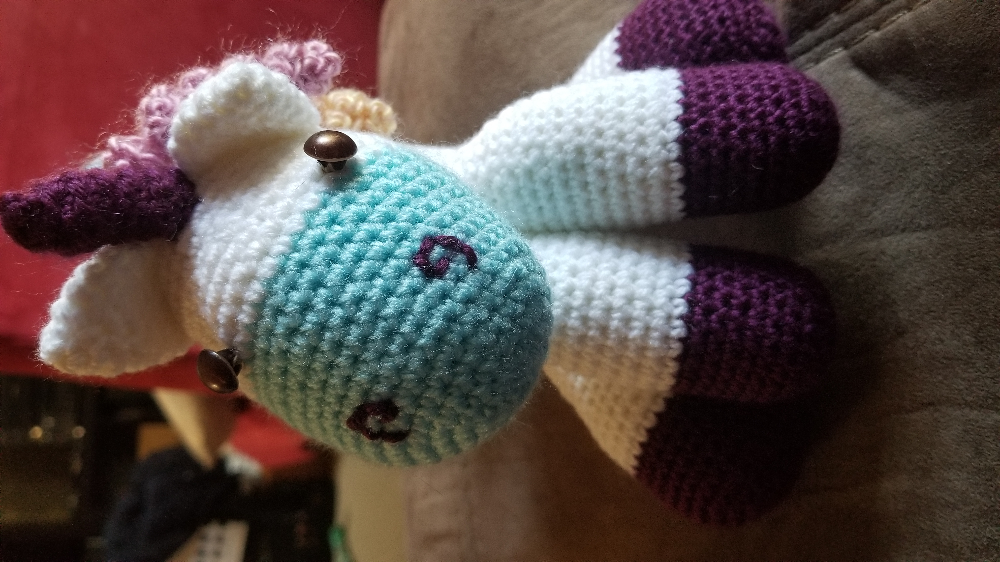
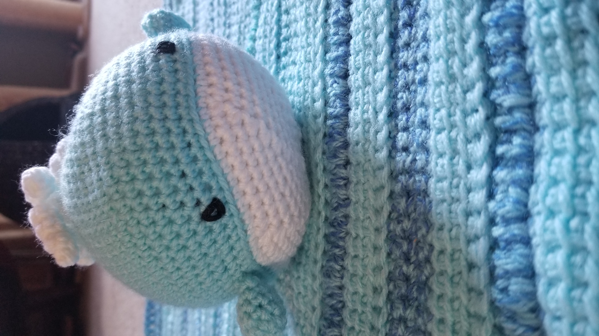
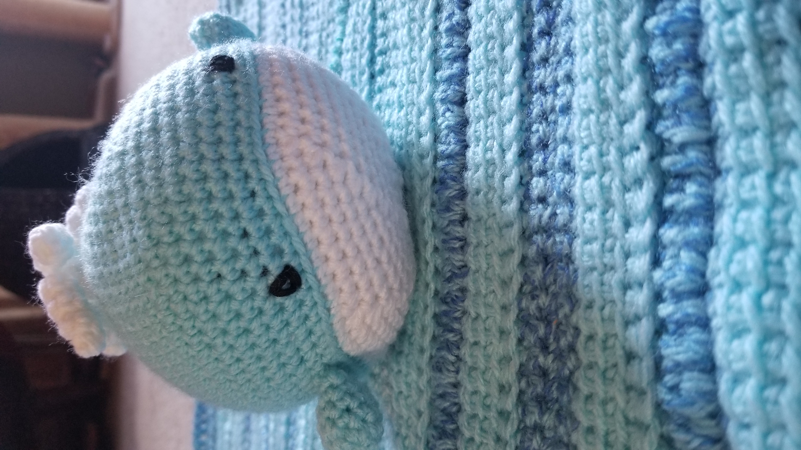
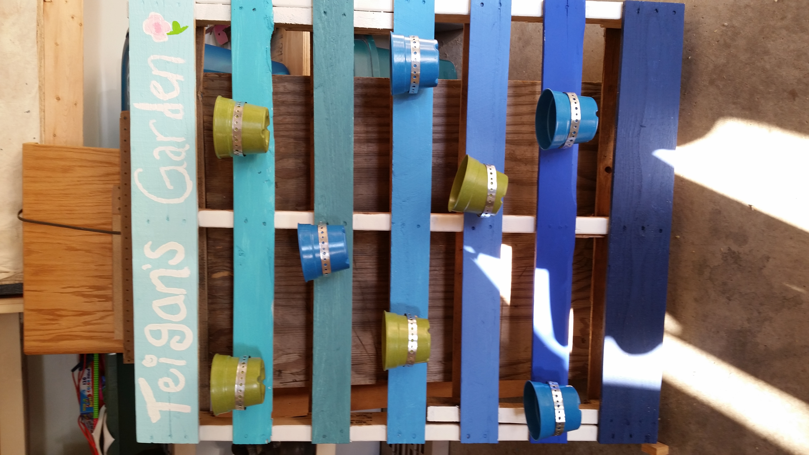
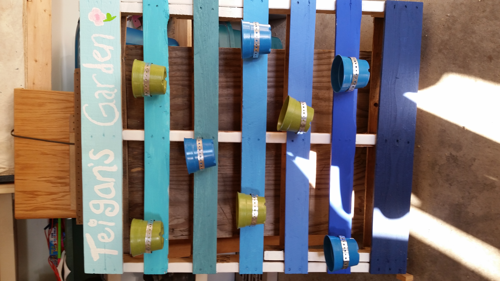

I have a passion for crochet and have made and given away many projects over the years.


 

I have enjoyed participating in other crafts and projects over the years with my family as well.
 


I enjoy playing games of all varieties - video, board and card. My family frequently has game nights and can be found playing Exploding Kittens, Sushi Go, Mario Party, or one of the many other games we own.
We are learning how to play Magic as a family - which is quite an adventure!
I also play Path of Exile whenever I can.
My husband and I have taken part in a local bean bag league since it began. We even made our own boards (he did most of the work!)

I am an avid reader and a dedicated moviegoer. My family owns hundreds of movies and books. We love to go see new movies and discuss our favorite parts (and sometimes least favorite) as a family on the drive home.
I enjoy music of many different genres and love live music. My husband and I frequently go to see bands we love. I have also been to see bands I have never heard of that my children love and enjoyed those experiences as well.